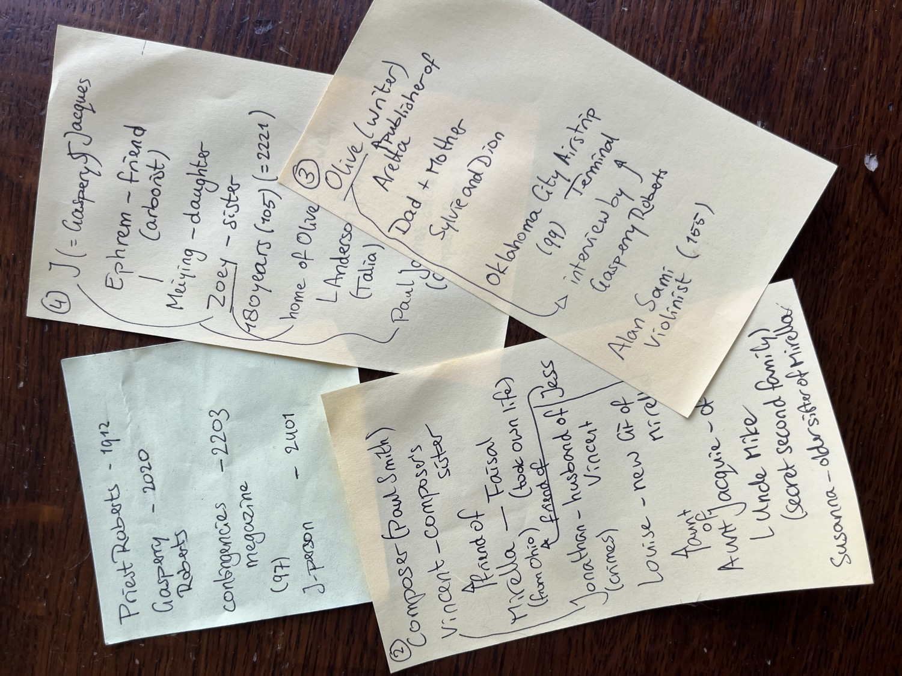

Verslag nummer 90
Toegevoegd op zondag 8 maart 2026
519 woorden
Sea of Tranquility
Dit is alweer het vijfde boek dat we met onze boekenclub lazen. Door de jaarwisseling en de daaropvolgende kleine ijstijd in het noorden is de bespreking hiervan wat in de tijd opgeschoven. En omdat ik zelf in de tussentijd twee dikke boeken aan het lezen ben (en absurd veel onderwijs heb en beoordelingen moet schrijven), is mijn eigen verslag ook wat later dan gemiddeld.
Het boek kent acht hoofdstukken, die eigenlijk onder twee delen verdeeld zijn. In het eerste deel, wat hoofdstukken 1 tot en met 4 bevat, gaan we steeds verder de geschiedenis in: van 1912 tot 2401. In het tweede deel springen we wat heen en weer tussen de gebeurtenissen die in het eerste deel zijn beschreven, en komt het werk tot zijn uiteindelijke ontplooiing. Het eerste deel is op deze manier een beetje een situatieschets voor het tweede.
Samenvatting (tonen)
Een gevolg van deze opbouw is dat het in eerste instantie lijkt alsof er in het eerste deel drie losse verhalen worden verteld. Zo maken we in het eerste hoofdstuk (Remittance/1912) kennis met Andrew St.John St.Andrew, een achttienjarige afstammeling van Willem de Veroveraar (p.3) die door toedoen van zijn opvatting over het Britse kolonialisme naar Canada is verbannen. Na een lange reis over het continent komt hij uiteindelijk in Victoria, in het verre westen, aan. Wanneer hij aldaar (of eigenlijk vanuit het dorpje Caiette) de wouden intrekt, heeft hij een ervaring die hem de rest van zijn leven zal bijblijven:
He has an imprission of being in some vast interior, something like a train station or a cathedral, ande there are notes of violin music, there are other people around him, and then an incomprehensible sound – (p.29)
Het tweede hoofdstuk (Mirella and Vincent/2020) lijkt in eerste instantie niets met het eerste te maken te hebben. Dit handelt om Mirella, wier vriend Faisal zelfmoord pleegde nadat hij door de man van een andere vriendin wat verleid tot een piramidespel - met het onvermijdelijke faillisement tot gevolg. Mirella is goede vriend van de zus van een muziek-artiest, Paul Smith, die tijdens een show een deel van een video-opname gemaakt door die zuster laat zien:
"I'd like to show you something strange." The music began first, and then the video: his sister had walked with her camera along a faint forest path, toward an old-grown maple tree [...] and then there was a brief confusion of overlapping sounds – a few notes of a violin, a dim cacophony like the interior of a metropolitan train station, a strange kind of whoosh that suggested hydrolic pressure – (p.40)
Het derde hoofdstuk (Last book tour on Earth/2203), tenslotte, draait om bestelling author Olive. Na haar succesvolle roman Marienbad (ah, is dat een referentie naar de avant-garde film L'Année dernière à Marienbad?) tourt ze rond op Aarde om de roman te promoten en lezingen te geven. Natuurlijk zijn er in deze periode kolonieën op de Maan en op Mars (zelf komt ze van Colony Two) en haar man en kinderen zijn nog thuis. Opvallend genoeg gaat Marienbad over een pandemie, terwijl er ook in het verhaal op dat moment een pandemie dreigt (en het boek zelf is ook nog eens geschreven tijdens de pandemie).
Tijdens één van de vele evenementen op deze tour wordt ze geïnterviewd door ene Gaspery-Jacques Roberts. Naar goed gebruik vraagt hij haar of haar roman niet op z'n minst deels auto-biografisch is:
The scene at the airport, where your character hears the violin and he's transported [...] is there an element of personal experience? I'm curious if you experienced something strange in the Oklahoma City Airship Terminal. (pp.98-99)
Zoals we kunnen zien, hebben alle drie de verhalen toch een ding gemeenschappelijk: in alledrie de verhalen gebeurt er iets vreemds dat bij alledrie op een andere manier hetzelfde lijkt te zijn. Dat blijkt ook te kloppen, wanneer we in het tweede deel van het boek kennismaken met Gasperby Roberts, die we eigenlijk ook al in de eerdere verhalen langs zagen komen. Het blijkt dat deze Roberts een tijdreiziger is, die door het niet naleven van het protocol een anomalie in het tijd-ruimte-continuüm heeft gecreëerd.
De exacte vorm en uitkomst van deze anomalie ga ik zelfs hier niet blootleggen; het volstaat op te merken dat de totaliteit van het boekje door deze kunstzinnige vondst bijzonder intrigererend en verrassend is – en blijft, zelfs tot aan de voorlaatste pagina.
Evaluatie
Sea of Tranquility leest heel prettig en soepel – ik las het in een paar uur uit (deels in bad: ik moet toegeven dat ik wel wat gerimpeld was toen ik daar uit kwam). Doordat het lijkt alsof er eerst drie losstaande verhalen worden verteld, raak je wellicht wat in de war. Gelukkig is al vanaf het begin af aan duidelijk dat er uiteindelijk één verhaallijn uit het geheel te destilleren moet zijn, dus je let wel op aanwijzingen en signalen die je door het verdere boek heen helpen.
Het is wat irritant dat er wel érg veel personages worden geïntroduceerd die verder nauwelijks een rol in het geheel vervullen. Ik ben al vrij snel begonnen met notities maken van namen en verhoudingen, omdat ik van mezelf weet dat ik daar slecht in ben én omdat ik al vroeg vermoedde dat die namen nog wel eens terug zouden kunnen komen.

Het boek speelt niet alleen met tijd en ruimte, maar ook met gewaarwording, illusies en zekerheid. Er zitten impliciete links in naar een cartesiaans solipslisme, of Putnam's Brains in a Vat, of The Matrix (bijvoorbeeld wanneer het gaat over het gecontrolleerde weer en het artificiële daglicht in Colony two, p.131), waarmee het boek, gezien de huidige ontwikkelingen in kunstmatige intelligentie, een behoorlijke urgentie krijgt:
Think of how holograms and virtual reality have evolved, even just in the past few years. If we can run fairly convincing simulations of reality now, think of what those simulations will be like in a century or two. The idea with the simulation hypothesis is, we can't rule out the possibility that all of reality is a simulation (p.111, Bad Chickens/2401)
Behalve deze impliciete links zie ik ook wel expliciete links naar hedendaagse (en minder hedendaagse) gebeurtenissen en literatuur. Zo gaat het bijvoorbeeld vrij duidelijk over kolonialisme (wat Sloterijk 'de fictie van de zendingstheologie' heeft gedoopt), wereldreizen (met name waar het gaat over de Columbia Rediviva, p.78), of, opnieuw, lichamelijkheid en werkelijkheid (bijvoorbeeld op p.131).
Wat ik niet zo goed begrijp is dat onze clubgenoot dit boek had uitgekozen omdat de persoonlijkheden hierin aimabeler waren dan die in Play Ground. Dat zie ik persoonlijk niet zo, maar dat kan ze tijdens de boekbespreking wellicht nog toelichten.